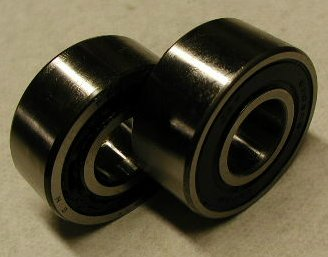
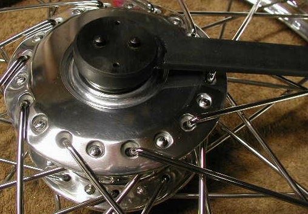

Summary:
This article covers the procedure and modifications required to upgrade the
bearings in the Commando front disc hub to sealed bearings. This article is mainly about the front disc
hub, but we do describe the front and rear drum hubs at the end of this article.
The same modification discribed for the front disc hub can be performed to upgrade the front drum hub to
sealed bearings. To upgrade the rear drum hub and rear MK3 disc hub to sealed bearings, you just need to replace
the existing single row bearings to sealed bearings since both bearings (stock and sealed) are the same thickness.
Please note: On the rear brake drum/sprocket (06-2764) and the MK3 rear sprocket (06-6011) the bearing bore will have to be machined
at least an additional .055" deep to accept the sealed bearing.
The dummy axle (06-2067 Pre-MK3 or 06-5552 MK3) will have to be turned down .056" like the front hub spacer, discribed later.
Since this requires a bit more work it will not be covered in this article. We will modify a new sprocket and dummy axle
(part # 06-2764/S,
$X.XX
- 06-6011/S,
$X.XX)
or modify your sprocket and axle
(part # 06-2764/CU,
$X.XX
- 06-6011/CM,
$X.XX)
Bearings:
On the non-disc side a single row bearing is used and this picture shows stock bearing
(part # 04-0100,
$X.XX)
on the left and the replacement sealed bearing (part # 04-0100/S,
$X.XX)
on the right.

On the disc side a double row bearing is used and this picture shows the stock bearing
(part # 06-7688,
$X.XX)
which is a 17x40x16mm bearing or .6299" thick, on the left and the sealed bearing (part # 06-7688/S,
$X.XX)
which is a 17x40x17.42mm bearing or .6858" thick, on the right. You will notice that the sealed bearing is slightly thicker than the stock
bearing (.0559" thicker or .056").
Procedure:
The first step is removing the old bearings. If you look at the picture showing the disc side of the hub where the double bearing is inserted
you will see how the bearing bore is fairly deep. Looking at the pictures of the bearing spacers, you will notice that the spacer flanges are
triangular in shape, this is to aid in removing the bearings. Start by pressing the double row bearing (disc side) into the hub slightly until
you feel it has bottomed out. Next you will try and press the end of the spacer, against the single row bearing (non-disc side),
off center exposing part of the inner race of the bearing. This can be accomplished by using a long screwdriver and levering the spacer end
over. The notches in the spacer flanges will allow the spacer end to be displaced and it may take several tries to find a notch.
With part of the inner race exposed, you can now drive the bearing out with a long drift. The double row bearing can easily be removed by
using the spacer or a long drift to press it out.
Fitting the non-disc side bearing:
This bearing can be pressed in using drift or a socket that has an O.D. just under the O.D. of the
bearing (for drift dimensions see drift number CD-0001 in our drift information page).
The socket must fit into the hub, only press on the outer race of the bearing, and not
touch the seal or the inner race.
This first picture shows the socket on top of the bearing, just prior to gently pressing it into the
hub. We normally use a press and the drift, described above, to insert bearings, but you can use a plastic mallet to press
this bearing into the hub.
This next picture shows the bearing fully pressed into the hub.
This pictures show the front disc, wheel spacer, seal and lockring.
The spacer (part # 06-3919,
$X.XX)
is on the left. The seal (part # 06-7614,
$X.XX)
is in the center and the Lockring (part # 06-0363
$X.XX)
is on the right.
These parts are assembled in the order shown with the spacer
fitting down on the wheel bearing, the seal fitting around the spacer and the lockring screwing
into the hub.
The Lockring is tightened by using the factory spanner (
06-3965). The current price for this spanner is
$X.XX.

I found that if you leave the felt seal (06-7614) out, the wheel will spin freer
and by using a sealed bearing the felt seal is redundant. After saying this I have found, on the earlier hubs, the felt seal does help
with spacing so it is your call.
This picture shows the non-disc side assembled without the felt seal.
Fitting the disc side bearing:
This is the side that requires some modification in order to upgrade the stock double row
bearing with a sealed bearing. This picture shows the bearing spacer (part # 06-1955,
$5.80)
with the new spacer on the left and an older spacer on the right.
We now provide the new spacer already machined to the correct length for the new sealed bearing
(part # 06-1955/S,
$X.XX)
You need to machine off the end of the spacer .056", the difference in the thickness of the stock
bearing and the new sealed bearing. All the front hubs that I have seen, both disc and drum, are already
machined to accept the thicker bearing with the shorter spacer and still press both bearings
against the spacer; but you should check the depth of the hub insert to verify this.
This is easily done by placing the stock spacer into the hub to verify
that the spacer sticks up farther than .056" above the bottom of the insert.
On the older spacer, you will also need to machine back the indent for the flange on the side
that you machine off the end. The new spacer is easier since you only need to machine off the end
of the spacer. This picture shows the shortened, old style, spacer inserted into the hub.
This picture shows the spindle and washers pressing in the bearing.
You can assemble the washer (06-2071), felt seal (06-7614) and retaining washer (06-7751) or
leave them out depending on your preference.
Rear Drum Hub:
Both spacers have pressed fitting flanges that are easily removed by placing the inside part
of the flange between two flat surfaces (like the jaws of a vise) and gently pounding the
spacer down.
The picture shows the spacers with the flanges removed.
 You can press this bearing into the hub the same way as the other bearing, making sure you keep
the spacer aligned or you can build a drift by taking two 7/16" washers just under the size of the
O.D. of the bearing, relieving the center of one washer, and using the front wheel spindle.
This picture shows the two washers with one relieved so as not to touch the inner race of the
bearing.
You can press this bearing into the hub the same way as the other bearing, making sure you keep
the spacer aligned or you can build a drift by taking two 7/16" washers just under the size of the
O.D. of the bearing, relieving the center of one washer, and using the front wheel spindle.
This picture shows the two washers with one relieved so as not to touch the inner race of the
bearing.
 This picture shows bearing inserted into the hub.
This picture shows bearing inserted into the hub.
This hub has a stepped spacer that allows the bearings to be driven out by inserting a drift in one end and pressing the spacer through the hub. Since the end of the spacer, where the threaded cap is inserted, sticks out beyond the bearing, it is easier to drive the spacer from this end.
The drift shown here is our drift number CD-0002 (for drift dimensions see drift number CD-0002 in our drift information page), but could be any rod that is slightly smaller than the bearing bore, but larger than the I.D. of the spacer end.
Front Drum Hub:
This page was written and designed by F. H. Eaton & Associates if you have any questions or comments please contact us at info@fheaton.com